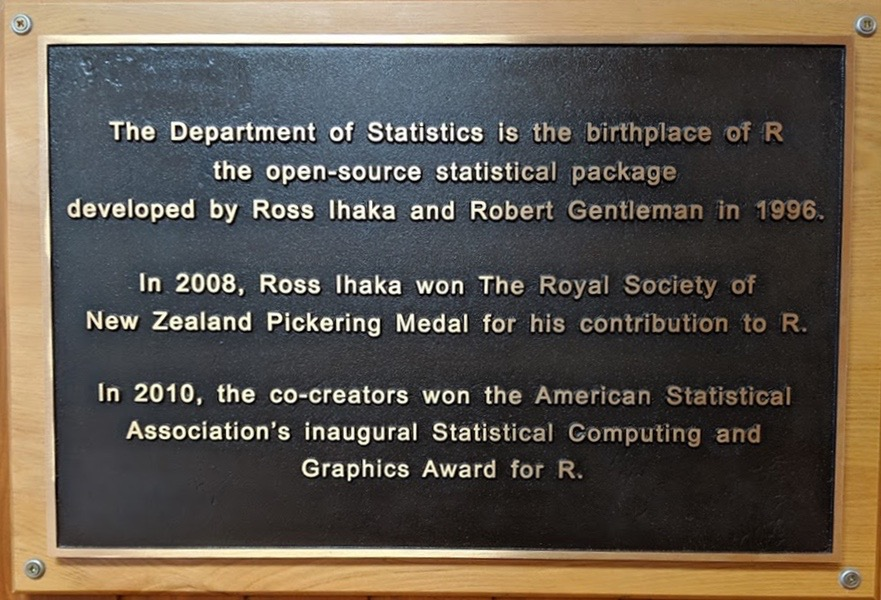
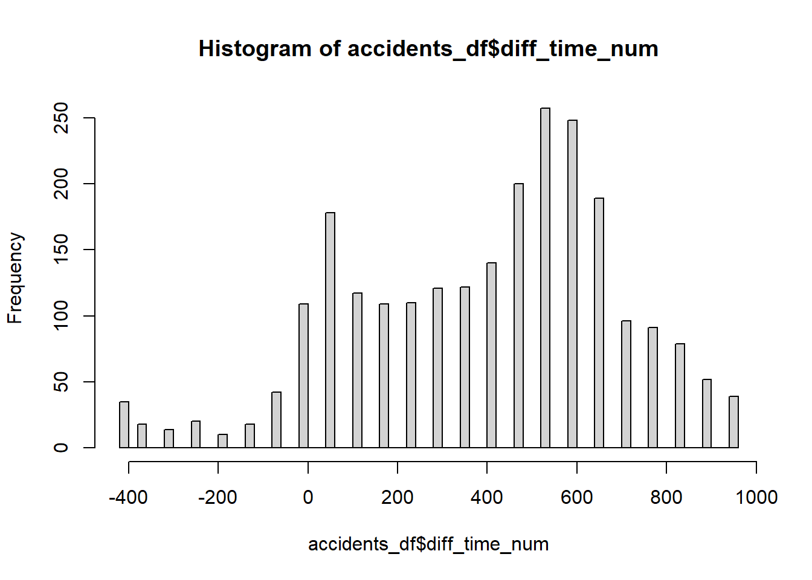

ma_somme <- 4+41 Prise en main de R
Dans ce chapitre, nous revenons brièvement sur l’histoire de R et la philosophie qui entoure le logiciel. Nous donnons quelques conseils pour son installation et la mise en place d’un environnement de développement. Nous présentons les principaux objets qui sous-tendent le travail effectué avec R (DataFrame, vecteur, matrice, etc.) et comment les manipuler avec des exemples appliqués. Si vous maîtrisez déjà R, nullement besoin de lire ce chapitre!
Liste des packages utilisés dans ce chapitre
- Pour importer des fichiers externes :
-
foreignpour entre autres les fichiers dbase et ceux des logiciels SPSS et Stata. -
sas7bdatpour les fichiers du logiciel SAS. -
xlsxpour les fichiers Excel.
-
- Pour manipuler des chaînes de caractères et des dates :
-
stringrpour les chaînes de caractères. -
lubridatepour les dates.
-
- Pour manipuler des données :
-
dplyrdutidyversepropose une grammaire pour manipuler et structurer des données.
-
1.1 Histoire et philosophie de R
R est à la fois un langage de programmation et un logiciel libre (sous la licence publique générale GNU) dédié à l’analyse statistique et soutenu par une fondation : R Foundation for Statistical Computing. Il est principalement écrit en C et en Fortran, deux langages de programmation de « bas niveau », proches du langage machine. À l’inverse, R est un langage de « haut niveau », car plus proche du langage humain.
R a été créé par Ross Ihaka et Robert Gentleman à l’Université d’Auckland en Nouvelle-Zélande. Si vous avez un jour l’occasion de passer dans le coin, une plaque est affichée dans le département de statistique de l’université; ça mérite le détour (figure 1.1). Une version expérimentale a été publiée en 1996, mais la première version stable ne date que de 2000. Il s’agit donc d’un logiciel relativement récent si nous le comparons à ses concurrents SPSS (1968), SAS (1976) et Stata (1984).

R a cependant réussi à s’imposer tant dans le milieu de la recherche que dans le secteur privé. Pour s’en convaincre, il suffit de lire l’excellent article concernant la popularité des logiciels d’analyse de données tiré du site r4stats.com (figure 1.2).

Les nombreux atouts de R justifient largement sa popularité sans cesse croissante :
R est un logiciel à code source ouvert (open source) et ainsi accessible à tous gratuitement.
Le développement du langage R est centralisé, mais la communauté peut créer et partager facilement des packages. Les nouvelles méthodes sont ainsi rapidement implémentées comparativement aux logiciels propriétaires.
R est un logiciel multiplateforme, fonctionnant sur Linux, Unix, Windows et Mac.
Comparativement à ses concurrents, R dispose d’excellentes solutions pour manipuler des données et réaliser des graphiques.
R dispose de nombreuses interfaces lui permettant de communiquer, notamment avec des systèmes de bases de données SQL et non SQL (MySQL, PostgresSQL, MongoDB, etc.), avec des systèmes de big data (Spark, Hadoop), avec des systèmes d’information géographique (QGIS, ArcGIS) et même avec des services en ligne comme Microsoft Azure ou Amazon AWS.
R est un langage de programmation à part entière, ce qui lui donne plus de flexibilité que ses concurrents commerciaux (SPSS, SAS, STATA). Avec R, vous pouvez accomplir de nombreuses tâches : monter un site web, créer un robot collectant des données en ligne, combiner des fichiers PDF, composer des diapositives pour une présentation ou même éditer un livre (comme celui-ci), mais aussi, et surtout, réaliser des analyses statistiques.
Un des principaux attraits de R est la quantité astronomique de packages actuellement disponibles. Un package est un ensemble de nouvelles fonctionnalités développées par des personnes utilisatrices de R et mises à disposition de l’ensemble de la communauté. Par exemple, le package ggplot2 est dédié à la réalisation de graphiques; les packages data.table et dplyr permettent de manipuler des tableaux de données; le package car offre de nombreux outils pour faciliter l’analyse de modèles de régressions, etc. Ce partage de packages rend accessible à tous des méthodes d’analyses complexes et récentes et favorise grandement la reproductibilité de la recherche. Cependant, ce fonctionnement implique quelques désavantages :
Il existe généralement plusieurs packages pour effectuer le même type d’analyse, ce qui peut devenir une source de confusion.
Certains packages cessent d’être mis à jour au fil des années, ce qui nécessite de trouver des solutions de rechange (et ainsi apprendre la syntaxe de nouveaux packages).
Il est impératif de s’assurer de la fiabilité des packages que vous souhaitez utiliser, car n’importe qui peut proposer un package.
Il nous semble important de relativiser d’emblée la portée du dernier point. Il est rarement nécessaire de lire et d’analyser le code source d’un package pour s’assurer de sa fiabilité. Nous ne sommes pas des spécialistes de tous les sujets et il peut être extrêmement ardu de comprendre la logique d’un code écrit par une autre personne. Nous vous recommandons donc de privilégier l’utilisation de packages qui :
ont fait l’objet d’une publication dans une revue à comité de lecture ou qui ont déjà été cités dans des études ayant fait l’objet d’une publication revue par les pairs;
font partie de projets comme ROpensci prônant la vérification par les pairs ou subventionnés par des organisations comme R Consortium;
sont disponibles sur l’un des deux principaux répertoires de packages R, soit CRAN et Bioconductor.
Toujours pour nuancer notre propos, il convient de distinguer package de package! Certains d’entre eux sont des ensembles très complexes de fonctions permettant de réaliser des analyses poussées alors que d’autres sont des projets plus modestes dont l’objectif principal est de simplifier le travail des personnes utilisant R. Ces derniers ressemblent à de petites boîtes à outils et font généralement moins l’objet d’une vérification intensive.
Pour conclure cette section, l’illustration partagée sur Twitter par Darren L Dahly résume avec humour la force du logiciel R et de sa communauté (figure 1.3) : R apparaît clairement comme une communauté hétéroclite, mais diversifiée et adaptable.

Dans ce livre, nous détaillons les packages utilisés dans chaque section avec un encadré spécifique.
Bloc packages
Habituellement localisé au début d’un chapitre, il comprend la liste des packages R utilisés pour un chapitre.
1.2 Environnement de travail
Dans cette section, nous vous proposons une visite de l’environnement de travail de R.
1.2.1 Installation de R
La première étape pour travailler avec R est bien sûr de l’installer. Pour cela, il suffit de visiter le site web de CRAN et de télécharger la dernière version de R en fonction de votre système d’exploitation : Windows, Linux ou Mac. Une fois installé, si vous démarrez R immédiatement, vous aurez accès à une console, plutôt rudimentaire, attendant sagement vos instructions (figure 1.4).

Notez que vous pouvez aussi télécharger des versions plus anciennes de R en allant sur ce lien. Cela peut être intéressant lorsque vous voulez reproduire des résultats d’une autre étude ou que certains packages ne sont plus disponibles dans les nouvelles versions.
1.2.2 Environnement RStudio
Rares sont les adeptes de R qui préfèrent travailler directement avec la console classique. Nous vous recommandons vivement d’utiliser RStudio, un environnement de développement (IDE) dédié à R offrant une intégration très intéressante d’une console, d’un éditeur de texte, d’une fenêtre de visualisation des données et d’une autre pour les graphiques, d’un accès à la documentation, etc. En d’autres termes, si R est un vélo minimaliste, RStudio permet d’y rajouter des freins, des vitesses, un porte-bagages, des garde-boues et une selle confortable. Vous pouvez télécharger et installer RStudio sur Windows, Linux et Mac. La version de base est gratuite, mais l’entreprise qui développe ce logiciel propose aussi des versions commerciales du logiciel qui assurent essentiellement une assistance technique. Il existe d’autres environnements de développement pour travailler avec R (Visual Studio Code, Jupyter, Tinn-R, Radiant, RIDE, etc.), mais RStudio offre à ce jour la meilleure option en termes de facilité d’installation, de prise en main et de fonctionnalités proposées (voir l’interface de RStudio à la figure 1.5).

Avant d’aller plus loin, notez que :
La console actuellement ouverte dans RStudio vous informe de la version de R que vous utilisez. Vous pouvez en effet avoir plusieurs versions de R installées sur votre ordinateur et passer de l’une à l’autre avec RStudio. Pour cela, naviguez dans l’onglet Tools/Global Options et dans le volet General, puis sélectionnez la version de R que vous souhaitez utiliser.
L’aspect de RStudio peut être modifié en naviguant dans l’onglet Tools/Global Options et dans le volet Appearance. Nous avons une préférence pour le mode sombre avec le style pastel on dark (figure 1.6), mais libre à vous de choisir le style qui vous convient.

Une fois ces détails réglés, vous pouvez ouvrir votre première feuille de code en allant dans l’onglet File/New File/R Script. Votre environnement est maintenant découpé en quatre fenêtres (figure 1.7) :
L’éditeur de code, vous permettant d’écrire le script que vous voulez exécuter et de garder une trace de votre travail. Ce script peut être enregistré sur votre ordinateur avec l’extension .R, mais ce n’est qu’un simple fichier texte.
La console vous permettant d’exécuter votre code R et de voir les résultats s’afficher au fur et à mesure.
La fenêtre d’environnement vous montrant les objets, les fonctions et les jeux de données actuellement disponibles dans votre session (chargés dans la mémoire vive).
La fenêtre de l’aide, des graphiques et de l’explorateur de fichiers. Vous pouvez accéder ici à la documentation de R et des packages que vous utilisez, aux sorties graphiques que vous produisez et aux dossiers de votre environnement de travail.

Prenons un bref exemple : tapez la syntaxe suivante dans l’éditeur de code (fenêtre 1 à la figure 1.7) :
Sélectionnez ensuite cette syntaxe (mettre en surbrillance avec la souris) et utilisez le raccourci Ctrl+Entrée ou cliquez sur le bouton Run (avec la flèche verte) pour envoyer cette syntaxe à la console qui l’exécutera immédiatement. Notez que rien ne se passe tant que le code n’est pas envoyé à la console. Il s’agit donc de deux étapes distinctes : écrire son code, puis l’envoyer à la console. Constatez également qu’un objet ma_somme est apparu dans votre environnement et que sa valeur est bien 8. Votre console se « souvient » de cette valeur : elle est actuellement stockée dans votre mémoire vive sous le nom de ma_somme (figure 1.8).

Pour conclure cette section, nous vous invitons à enregistrer votre première syntaxe R (File/Save As) dans un fichier .R que vous pouvez appeler mon_premier_script.R par exemple. Fermez ensuite RStudio, redémarrez-le et ouvrez (File/Open File) votre fichier mon_premier_script.R. Vous pouvez constater que votre code est toujours présent, mais que votre environnement est vide tant que vous n’exécutez pas votre syntaxe. En effet, lorsque vous fermez RStudio, l’environnement est vidé pour libérer de la mémoire vive. Cela peut poser problème lorsque certains codes sont très longs à exécuter, nous verrons donc plus tard comment enregistrer l’environnement en cours pour le recharger par la suite.
1.2.3 Installation et chargement un package
Dans la section sur la Philosophie de R, nous avons souligné la place centrale jouée par les packages. Notez que les termes paquet et plus rarement librairie sont parfois utilisés en français. Voyons ensemble comment installer un package, par exemple celui intitulé lubridate, qui nous permettra plus tard de manipuler des données temporelles.
1.2.3.1 Installation d’un package depuis CRAN
Pour installer un package, il est nécessaire d’être connecté à Internet puisque R va accéder au répertoire de packages CRAN pour télécharger le package et l’installer sur votre machine. Cette opération est réalisée avec la fonction install.packages.
install.packages("lubridate")Notez qu’une fois que le package est installé, il demeure disponible localement sur votre ordinateur, à moins de le désinstaller explicitement avec la fonction remove.packages.
1.2.3.2 Installation d’un package depuis GitHub
CRAN est le répertoire officiel des packages de R. Vous pouvez cependant télécharger des packages provenant d’autres sources. Très souvent, les packages sont disponibles sur le site web GitHub et nous pouvons même y trouver des versions en développement avec des fonctionnalités encore non intégrées dans la version sur CRAN. Reprenons le cas de lubridate, mais sur GitHub (il est disponible ici). Pour l’installer, nous devons d’abord installer un autre package appelé remotes (depuis CRAN).
install.packages("remotes")Maintenant que nous disposons de remotes, nous pouvons utiliser la fonction d’installation remotes::install_github pour directement télécharger lubridate depuis GitHub.
remotes::install_github("tidyverse/lubridate")1.2.3.3 Chargement d’un package
Maintenant que lubridate est installé, nous pouvons le charger dans notre session actuelle de R et accéder aux fonctions qu’il propose. Pour cela, il suffit d’utiliser la fonction library. Conventionnellement, l’appel des packages se fait au tout début du script que vous rédigez. Rien ne vous empêche de le faire au fur et à mesure de votre code, mais ce dernier perd alors en lisibilité. Notez que pour chaque nouvelle session (redémarrage de R), il faut recharger les packages dont vous avez besoin avec la fonction library.
Si vous obtenez un message d’erreur du type :
Error in library(monPackage) : aucun package nommé ‘monPackage’ n'est trouvé
Cela signifie que le package que vous tentez de charger n’est pas encore installé sur votre ordinateur. Dans ce cas, réessayer de l’installer avec la fonction install.packages. Si le problème persiste, vérifiez que vous n’avez pas fait une faute de frappe dans le nom du package. Vous pouvez également redémarrer RStudio et réessayer d’installer ce package.
1.2.4 Aide disponible
Lorsque vous installez des packages dans R, vous téléchargez aussi leur documentation. Tous les packages de CRAN disposent d’une documentation, ce qui n’est pas forcément vrai pour ceux sur GitHub. Dans RStudio, vous pouvez accéder à la documentation des packages dans l’onglet Packages (figure 1.9). Vous pouvez utiliser la barre de recherche pour retrouver rapidement un package installé. Si vous cliquez sur le nom du package, vous accédez directement à sa documentation dans cette fenêtre.

Vous pouvez également accéder à ces informations en utilisant la syntaxe suivante dans votre console :
help(package = 'lubridate')Souvent, vous aurez besoin d’accéder à la documentation d’une fonction spécifique d’un package. Affichons la documentation de la fonction now de lubridate :
help(now, package = 'lubridate')ou plus simplement :
?lubridate::nowVous pouvez aussi utiliser le raccourci suivant.
?nowSi vous ne vous souvenez plus à quel package la fonction appartient, lancez une recherche en utilisant un double point d’interrogation :
??nowVous découvrirez ainsi que la fonction now n’existe pas que dans lubridate, ce qui souligne l’importance de bien connaître les packages que nous installons et que nous chargeons dans notre session !
Maintenant que nous avons fait le tour de l’environnement de travail, nous pouvons passer aux choses sérieuses, soit les bases du langage R.
1.3 Bases du langage R
R est un langage de programmation. Il vous permet de communiquer avec votre ordinateur pour lui donner des tâches à accomplir. Dans cette section, nous abordons les bases du langage. Ce type de section introductive à R est présente dans tous les manuels sur R; elle est donc incontournable. À la première lecture, elle vous semblera probablement aride, et ce, d’autant plus que nous ne réalisons pas d’analyse à proprement parler. Gardez en tête que l’analyse de données requiert au préalable une phase de structuration de ces dernières, opération qui nécessite la maîtrise des notions abordées dans cette section. Nous vous recommandons une première lecture de ce chapitre pour comprendre les manipulations que vous pouvez effectuer avec R, avant de poursuivre avec de la lecture des chapitres suivants dédiés aux analyses statistiques. Vous pourrez revenir consulter cette section au besoin. Notez aussi que la maîtrise des différents objets et des différentes opérations de base de R ne s’acquiert qu’en pratiquant. Vous gagnerez cette expertise au fil de vos prochains codes R, période durant laquelle vous pourrez consulter ce chapitre tel un guide de référence des objets et des notions fondamentales de R.
1.3.1 Hello World!
Une introduction à un langage de programmation se doit de commencer par le rite de passage Hello World. Il s’agit d’une forme de tradition consistant à montrer aux néophytes comment afficher le message Hello World à l’écran avec le langage en question.
print("Hello World")[1] "Hello World"Bravo! Vous venez officiellement de faire votre premier pas dans R!
1.3.2 Objets et expressions
Dans R, nous passons notre temps à manipuler des objets à l’aide d’expressions. Prenons un exemple concret : si vous tapez la syntaxe 4 + 3, vous manipulez deux objets (4 et 3) avec une expression indiquant que vous souhaitez obtenir la somme des deux objets.
4 + 3[1] 7Cette expression est correcte, R comprend vos indications et effectue le calcul.
Il est possible d’enregistrer le résultat d’une expression et de le conserver dans un nouvel objet. On appelle cette opération : « déclarer une variable ».
ma_somme <- 4 + 3Concrètement, nous venons de demander à R d’enregistrer le résultat de 4 + 3 dans un espace spécifique de notre mémoire vive. Si vous regardez dans votre fenêtre Environment, vous verrez en effet qu’un objet appelé ma_somme est actuellement en mémoire et a pour valeur 7.
Notez ici que le nom des variables ne peut être composé que de lettres, de chiffres, de points (.) et de tirets bas (_) et doit commencer par une lettre. R est sensible à la casse; en d’autres termes, les variables Ma_somme, ma_sommE, ma_SOMME, et MA_SOMME renvoient toutes à un objet différent. Attention donc aux fautes de frappe. Si vous déclarez une variable en utilisant le nom d’une variable existante, la première est écrasée par la seconde :
age <- 35
age[1] 35age <- 45
age[1] 45Portez alors attention aux noms de variables que vous utilisez et réutilisez. Réutilisons notre objet ma_somme dans une nouvelle expression :
ma_somme2 <- ma_somme + ma_sommeAvec cette nouvelle expression, nous indiquons à R que nous souhaitons déclarer une nouvelle variable appelée ma_somme2, et que cette variable aura pour valeur ma_somme + ma_somme, soit 7 + 7. Sans surprise, ma_somme2 a pour valeur 14.
Notez que la mémoire vive (l’environnement) est vidée lorsque vous fermez R. Autrement dit, R perd complètement la mémoire lorsque vous le fermez. Vous pouvez bien sûr recréer vos objets en relançant les mêmes syntaxes. C’est pourquoi vous devez conserver vos feuilles de codes et ne pas seulement travailler dans la console. La console ne garde aucune trace de votre travail. Pensez donc à bien enregistrer votre code!
Nous verrons dans une prochaine section comment sauvegarder des objets et les recharger dans une session ultérieure de R (section 1.6). Ce type d’opération est pertinent quand le temps de calcul nécessaire à la production de certains objets est très long.
1.3.3 Fonctions et arguments
Dans R, nous manipulons le plus souvent nos objets avec des fonctions. Une fonction est elle-même un objet, mais qui a la particularité de pouvoir effectuer des opérations sur d’autres objets. Par exemple, déclarons l’objet taille avec une valeur de 175,897 :
taille <- 175.897Nous utilisons la fonction round, dont l’objectif est d’arrondir un nombre avec décimales pour obtenir un nombre entier.
round(taille)[1] 176Pour effectuer leurs opérations, les fonctions ont généralement besoin d’arguments. Ici, taille est un argument passé à la fonction round. Si nous regardons la documentation de round avec help(round) (figure 1.10), nous constatons que cette fonction prend en réalité deux arguments : x et digits. Le premier est le nombre que nous souhaitons arrondir et le second est le nombre de décimales à conserver. Nous pouvons lire dans la documentation que la valeur par défaut de digits est 0, ce qui explique que round(taille) a produit le résultat de 176.

roundRéutilisons maintenant la fonction round, mais en gardant une décimale :
round(taille, digits = 1)[1] 175.9Il est aussi possible que certaines fonctions ne requièrent pas d’argument. Par exemple, la fonction now indique la date précise (avec l’heure) et n’a besoin d’aucun argument pour le faire :
now()[1] "2024-07-03 17:32:55 EDT"Par contre, si nous essayons de lancer la fonction round sans argument, nous obtenons une erreur :
round()Erreur : 0 argument passé à 'round' qui en exige 1 ou 2
Le message est très clair, round a besoin d’au moins un argument pour fonctionner. Si, au lieu d’un nombre, nous avions donné du texte à la fonction round, nous aurions aussi obtenu une erreur :
round("Hello World")Erreur dans round("Hello World") : argument non numérique pour une fonction mathématique
À nouveau le message est très explicite : nous avons passé un argument non numérique à une fonction mathématique. Lisez toujours vos messages d’erreurs : ils permettent de repérer les coquilles et de corriger votre code!
Nous terminons cette section avec une fonction essentielle, print, qui permet d’afficher la valeur d’une variable.
print(ma_somme)[1] 71.3.4 Principaux types de données
Depuis le début de ce chapitre, nous avons déclaré plusieurs variables et essentiellement des données numériques. Dans R, il existe trois principaux types de données de base :
Les données numériques qui peuvent être des nombres entiers (appelés integers) ou des nombres décimaux (appelés floats ou doubles), par exemple
15et15.3.Les données de type texte qui sont des chaînes de caractères (appelées strings) et déclarées entre guillemets
"abcdefg".Les données booléennes (booleans) qui peuvent n’avoir que deux valeurs : vrai (
TRUE) ou faux (FALSE).
Déclarons une variable pour chacun de ces types :
age <- 35
taille <- 175.5
adresse <- '4225 rue de la gauchetiere'
proprietaire <- TRUESimples ou doubles quotes?
Pour déclarer des données de type texte, il est possible d’utiliser des quotes simples ' (apostrophe) ou des quotes doubles " (guillemets), cela ne fait aucune différence pour R. Cependant, si la chaîne de caractères que vous créez contient une apostrophe, il est nécessaire d’utiliser des quotes doubles et inversement si votre chaîne de caractère contient des guillemets.
phrase1 <- "J'adore le langage R!"
phrase2 <- 'Je cite : "il est le meilleur langage de statistique".'Si la chaîne de caractère contient des guillemets et des apostrophes, il est nécessaire d’utiliser la barre oblique inversée \ pour indiquer à R que ces apostrophes ou ces guillemets ne doivent pas être considérés comme la fin de la chaîne de caractère.
phrase3 <- "Je cite : \"j'en rêve la nuit\"."
cat(phrase3)Je cite : "j'en rêve la nuit".Les barres obliques inversées ne font pas partie de la chaîne de caractère, ils sont là pour “échapper” les guillemets qui doivent rester dans la chaîne de caractère. Si une chaîne de caractère doit contenir une barre oblique inversée, alors il faut l’échapper également en utilisant une deuxième barre oblique inversée.
phrase4 <- "Une phrase avec une barre oblique inversée : \\"
cat(phrase4)Une phrase avec une barre oblique inversée : \Faites attention à la coloration syntaxique de RStudio! Elle peut vous aider à repérer facilement une chaîne de caractère qui aurait été interrompue par un guillemet ou une apostrophe mal placés.
Si vous avez un doute sur le type de données stockées dans une variable, vous pouvez utiliser la fonction typeof. Par exemple, cela permet de repérer si des données qui sont censées être numériques sont en fait stockées sous forme de texte comme dans l’exemple ci-dessous.
typeof(age)[1] "double"typeof(taille)[1] "double"# Ici tailletxt est définie comme une chaîne de caractère car la valeur est
# définie entre des guillemets.
tailletxt <- "175.5"
typeof(tailletxt)[1] "character"Notez également qu’il existe des types pour représenter l’absence de données :
pour représenter un objet vide, nous utilisons l’objet
NULL,pour représenter une donnée manquante, nous utilisons l’objet
NA,pour représenter un texte vide, nous utilisons une chaîne de caractère de longueur 0, soit
"".
age2 <- NULL
taille2 <- NA
adresse2 <- ''1.3.5 Opérateurs
Nous avons vu que les fonctions permettent de manipuler des objets. Nous pouvons également effectuer un grand nombre d’opérations avec les opérateurs.
1.3.5.1 Opérateurs mathématiques
Les opérateurs mathématiques (tableau 1.1) permettent d’effectuer des calculs avec des données de type numérique.
| Opérateur | Description | Syntaxe | Résultat |
|---|---|---|---|
+ |
Addition | 4 + 4 |
8,0 |
- |
Soustraction | 4 - 3 |
1,0 |
* |
Multiplication | 4 * 3 |
12,0 |
/ |
Division | 12 / 4 |
3,0 |
^ |
Exponentiel | 4 ^ 3 |
64,0 |
** |
Exponentiel | 4 ** 3 |
64,0 |
%% |
Reste de division | 15,5 %% 2 |
1,5 |
%/% |
Division entière | 15,5 %/% 2 |
7,0 |
1.3.5.2 Opérateurs relationnels
Les opérateurs relationnels (tableau 1.2) permettent de vérifier des conditions dans R. Ils renvoient un booléen, TRUE si la condition est vérifiée et FALSE si ce n’est pas le cas.
| Opérateur | Description | Syntaxe | Résultat |
|---|---|---|---|
== |
Égalité | 4 == 4 |
TRUE |
!= |
Différence | 4 != 4 |
FALSE |
> |
Est supérieur | 5 > 4 |
TRUE |
< |
Est inférieur | 5 < 4 |
FALSE |
>= |
Est supérieur ou égal | 5 >= 4 |
TRUE |
<= |
Est inférieur ou égal | 5 <= 4 |
FALSE |
1.3.5.3 Opérateurs logiques
Les opérateurs logiques (tableau 1.3) permettent de combiner plusieurs conditions :
L’opérateur ET (
&) permet de vérifier que deux conditions (l’une ET l’autre) sont TRUE. Si l’une des deux est FALSE, il renvoie FALSE.L’opérateur OU (
|) permet de vérifier que l’une des deux conditions est TRUE (l’une OU l’autre). Si les deux sont FALSE, alors il renvoie FALSE.L’opérateur NOT (
!) permet d’inverser une condition. Ainsi, NOT TRUE donne FALSE et NOT FALSE donne TRUE.
| Opérateur | Description | Syntaxe | Résultat |
|---|---|---|---|
& |
ET | TRUE & FALSE |
FALSE |
| |
OU | TRUE | FALSE |
TRUE |
! |
NOT | ! TRUE |
FALSE |
Prenons le temps pour un rapide exemple :
A <- 4
B <- 10
C <- -5
# Produit TRUE car A est bien plus petit que B et C est bien plus petit que A
A < B & C < A[1] TRUE# Produit FALSE car si A est bien plus petit que B,
# B est en revanche plus grand que c
A < B & B < C[1] FALSE# Produit TRUE car la seconde condition est inversée
A < B & ! B < C[1] TRUE# Produit TRUE car au moins une des deux conditions est juste
A < B | B < C[1] TRUENotez que l’opérateur ET est prioritaire sur l’opérateur OU et que les parenthèses sont prioritaires sur tous les opérateurs :
# Produit TRUE car nous commençons par tester A < B puis B < C ce qui donne FALSE
# On obtient ensuite
# FALSE | A > C
# Enfin, A est bien supérieur à C, donc l'une des deux conditions est vraie
A < B & B < C | A > C[1] TRUENotez qu’en arrière-plan, les opérateurs sont en réalité des fonctions déguisées. Il est donc possible de définir de nouveaux comportements pour les opérateurs. Il est par exemple possible d’additionner ou de comparer des objets spéciaux comme des dates, des géométries, des graphes, etc.
1.3.6 Structures de données
Jusqu’à présent, nous avons utilisé des objets ne comprenant qu’une seule valeur. Or, des analyses statistiques nécessitent de travailler avec des volumes de données bien plus grands. Pour stocker des valeurs, nous travaillons avec différentes structures de données : les vecteurs, les matrices, les tableaux de données et les listes.
1.3.6.1 Vecteurs
Les vecteurs sont la brique élémentaire de R. Ils permettent de stocker une série de valeurs du même type dans une seule variable. Pour déclarer un vecteur, nous utilisons la fonction c() :
Nous venons ainsi de déclarer quatre nouvelles variables étant chacune un vecteur de longueur cinq (comprenant chacun cinq valeurs). Ces vecteurs représentent, par exemple, les réponses de plusieurs personnes à un questionnaire.
Distinction entre un vecteur de type texte et un vecteur de type facteur
Il existe dans R une subtilité à l’origine de nombreux malentendus : la distinction entre un vecteur de type texte et un vecteur de type facteur. Dans l’exemple précédent, le vecteur adresses est un vecteur de type texte. Chaque nouvelle valeur ajoutée dans le vecteur peut être n’importe quelle nouvelle adresse. Déclarons un nouveau vecteur qui contient cette fois-ci la couleur des yeux de personnes ayant répondu au questionnaire.
couleurs_yeux <- c('marron', 'marron', 'bleu', 'bleu', 'marron', 'vert')Contrairement aux adresses, il y a un nombre limité de couleurs que nous pouvons mettre dans ce vecteur. Il est donc intéressant de fixer les valeurs possibles du vecteur pour éviter d’en ajouter de nouvelles par erreur. Pour cela, nous devons convertir ce vecteur texte en vecteur de type facteur, ci-après nommé simplement facteur, avec la fonction as.factor.
couleurs_yeux_facteur <- as.factor(couleurs_yeux)Notez qu’à présent, nous pouvons ajouter une nouvelle couleur dans le premier vecteur, mais pas dans le second.
couleurs_yeux[7] <- "rouge"
couleurs_yeux_facteur[7] <- "rouge"Warning in `[<-.factor`(`*tmp*`, 7, value = "rouge"): niveau de facteur
incorrect, NAs générésLe message d’erreur nous informe que nous avons tenté d’introduire une valeur invalide dans le facteur.
Les facteurs peuvent sembler restrictifs et, très régulièrement, nous préférons travailler avec de simples vecteurs de type texte plutôt que des facteurs. Cependant, de nombreuses fonctions d’analyse nécessitent d’utiliser des facteurs, car ils assurent une certaine cohérence dans les données. Il est donc essentiel de savoir passer du texte au facteur avec la fonction as.factor. À l’inverse, il est parfois nécessaire de revenir à une variable de type texte avec la fonction as.character.
Notez que des vecteurs numériques peuvent aussi être convertis en facteurs :
tailles_facteur <- as.factor(tailles)Cependant, si vous souhaitez reconvertir ce facteur en format numérique, il faudra passer dans un premier temps par le format texte :
as.numeric(tailles_facteur)[1] 4 5 2 3 1Comme vous pouvez le voir, convertir un facteur en valeur numérique renvoie des nombres entiers. Ceci est dû au fait que les valeurs dans un facteur sont recodées sous forme de nombres entiers, chaque nombre correspondant à une des valeurs originales (appelées niveaux). Si nous convertissons un facteur en valeurs numériques, nous obtenons donc ces nombres entiers.
as.numeric(as.character(tailles_facteur))[1] 175.5 180.3 168.2 172.8 167.6Morale de l’histoire : ne confondez pas les données de type texte et de type facteur. Dans le doute, vous pouvez demander à R quel est le type d’un vecteur avec la fonction class.
Quasiment toutes les fonctions utilisent des vecteurs. Par exemple, nous pouvons calculer la moyenne du vecteur ages en utilisant la fonction mean présente de base dans R.
mean(ages)[1] 54Cela démontre bien que le vecteur est la brique élémentaire de R! Toutes les variables que nous avons déclarées dans les sections précédentes sont aussi des vecteurs, mais de longueur 1.
1.3.6.2 Matrices
Il est possible de combiner des vecteurs pour former des matrices. Une matrice est un tableau en deux dimensions (colonnes et lignes) et est généralement utilisée pour représenter certaines structures de données comme des images (pixels), effectuer du calcul matriciel ou plus simplement présenter des matrices de corrélations. Vous aurez rarement à travailler directement avec des matrices, mais il est bon de savoir ce qu’elles sont. Créons deux matrices à partir de nos précédents vecteurs.
ages tailles
[1,] 35 175.5
[2,] 45 180.3
[3,] 72 168.2
[4,] 56 172.8
[5,] 62 167.6# Afficher les dimensions de la matrice 1 (1er chiffre : lignes; 2e chiffre : colonnes)
print(dim(matrice1))[1] 5 2 [,1] [,2] [,3] [,4] [,5]
ages 35.0 45.0 72.0 56.0 62.0
tailles 175.5 180.3 168.2 172.8 167.6[1] 2 5Comme vous pouvez le constater, la fonction cbind permet de concaténer des vecteurs comme s’ils étaient les colonnes d’une matrice, alors que rbind les combine comme s’ils étaient les lignes d’une matrice. La figure 1.11 présente graphiquement le passage du vecteur à la matrice.

Notez que vous pouvez transposer une matrice avec la fonction t. Si nous essayons maintenant de comparer la matrice 1 à la matrice 2 nous allons avoir une erreur, car elles n’ont pas les mêmes dimensions.
matrice1 == matrice2Erreur dans matrice1 == matrice2 : tableaux de tailles inadéquates
En revanche, nous pouvons transposer la matrice 1 et refaire cette comparaison :
t(matrice1) == matrice2 [,1] [,2] [,3] [,4] [,5]
ages TRUE TRUE TRUE TRUE TRUE
tailles TRUE TRUE TRUE TRUE TRUELe résultat souligne bien que nous avons les mêmes valeurs dans les deux matrices. Il est aussi possible de construire des matrices directement avec la fonction matrix, ce que nous montrons dans la prochaine section.
1.3.6.3 Arrays
S’il est rare de travailler avec des matrices, il est encore plus rare de manipuler des arrays. Un array est une matrice spéciale qui peut avoir plus que deux dimensions. Un cas simple serait un array en trois dimensions : lignes, colonnes, profondeur, que nous pourrions représenter comme un cube, ou une série de matrices de mêmes dimensions et empilées. Au-delà de trois dimensions, il devient difficile de les représenter mentalement. Cette structure de données peut être utilisée pour représenter les différentes bandes spectrales d’une image satellitaire. Les lignes et les colonnes délimiteraient les pixels de l’image et la profondeur délimiterait les différentes bandes composant l’image (figure 1.11).

Créons un array en combinant trois matrices avec la fonction array. Chacune de ces matrices est composée respectivement de 1, de 2 et de 3 et a une dimension de 5 x 5. L’array final a donc une dimension de 5 x 5 x 3.
mat1 <- matrix(1, nrow = 5, ncol = 5)
mat2 <- matrix(2, nrow = 5, ncol = 5)
mat3 <- matrix(3, nrow = 5, ncol = 5)
mon_array <- array(c(mat1, mat2, mat3), dim = c(5,5,3))
print(mon_array), , 1
[,1] [,2] [,3] [,4] [,5]
[1,] 1 1 1 1 1
[2,] 1 1 1 1 1
[3,] 1 1 1 1 1
[4,] 1 1 1 1 1
[5,] 1 1 1 1 1
, , 2
[,1] [,2] [,3] [,4] [,5]
[1,] 2 2 2 2 2
[2,] 2 2 2 2 2
[3,] 2 2 2 2 2
[4,] 2 2 2 2 2
[5,] 2 2 2 2 2
, , 3
[,1] [,2] [,3] [,4] [,5]
[1,] 3 3 3 3 3
[2,] 3 3 3 3 3
[3,] 3 3 3 3 3
[4,] 3 3 3 3 3
[5,] 3 3 3 3 31.3.6.4 DataFrames
S’il est rare de manipuler des matrices et des arrays, le DataFrame (tableau de données en français) est la structure de données la plus souvent utilisée. Dans cette structure, chaque ligne du tableau représente un individu et chaque colonne représente une caractéristique de cet individu. Ces colonnes ont des noms qui permettent facilement d’accéder à leurs valeurs. Créons un DataFrame (tableau 1.4) à partir de nos quatre vecteurs et de la fonction data.frame.
df <- data.frame(
"age" = ages,
"taille" = tailles,
"adresse" = adresses,
"proprietaire" = proprietaires
)| age | taille | adresse | proprietaire |
|---|---|---|---|
| 35 | 175,5 | 4225 rue de la gauchetiere | TRUE |
| 45 | 180,3 | 4223 rue de la gauchetiere | TRUE |
| 72 | 168,2 | 4221 rue de la gauchetiere | FALSE |
| 56 | 172,8 | 4219 rue de la gauchetiere | TRUE |
| 62 | 167,6 | 4217 rue de la gauchetiere | TRUE |
Dans RStudio, vous pouvez visualiser votre tableau de données avec la fonction View(df). Comme vous pouvez le constater, chaque vecteur est devenu une colonne de votre tableau de données df. La figure 1.13 résume ce passage d’une simple donnée à un DataFrame en passant par un vecteur.

Plusieurs fonctions de base de R fournissent des informations importantes sur un DataFrame :
-
namesrenvoie les noms des colonnes du DataFrame; -
nrowrenvoie le nombre de lignes; -
ncolrenvoie le nombre de colonnes.
Vous pouvez accéder à chaque colonne de df en utilisant le symbole $ ou [["nom_de_la_colonne"]]. Recalculons ainsi la moyenne des âges :
1.3.6.5 Listes
La dernière structure de données à connaître est la liste. Elle ressemble à un vecteur, au sens où elle permet de stocker un ensemble d’objets les uns à la suite des autres. Cependant, une liste peut contenir n’importe quel type d’objets. Vous pouvez ainsi construire des listes de matrices, des listes d’arrays, des listes mixant des vecteurs, des graphiques, des DataFrames, des listes de listes…
Créons ensemble une liste qui va contenir des vecteurs et des matrices à l’aide de la fonction list.
Il est possible d’accéder aux éléments de la liste par leur position dans cette dernière en utilisant les doubles crochets [[ ]] :
Il est aussi possible de donner des noms aux éléments de la liste et d’utiliser le symbole $ pour y accéder. Créons une nouvelle liste de vecteurs et donnons-leur des noms avec la fonction names.
liste2 <- list(c(35, 45, 72, 56, 62),
c(175.5, 180.3, 168.2, 172.8, 167.6),
c(TRUE, TRUE, FALSE, TRUE, TRUE)
)
names(liste2) <- c("age", "taille", "proprietaire")
print(liste2$age)[1] 35 45 72 56 62Si vous avez bien suivi, vous devriez avoir compris qu’un DataFrame n’est en fait rien d’autre qu’une liste de vecteurs avec des noms!
Bravo! Vous venez de faire le tour des bases du langage R. Vous allez apprendre désormais à manipuler des données dans des DataFrames!
1.4 Manipulation de données
Dans cette section, vous apprendrez à charger et à manipuler des DataFrames en vue d’effectuer des opérations classiques de gestion de données.
1.4.1 Chargement d’un DataFrame depuis un fichier
Il est rarement nécessaire de créer vos DataFrames manuellement. Le plus souvent, vous disposerez de fichiers contenant vos données et utiliserez des fonctions pour les importer dans R sous forme d’un DataFrame. Les formats à importer les plus répandus sont :
.csv, soit un fichier texte dont chaque ligne représente une ligne du tableau de données et dont les colonnes sont séparées par un délimiteur (généralement une virgule ou un point-virgule);
.dbf, ou fichier dBase, souvent associés à des fichiers d’information géographique au format ShapeFile;
.xls et .xlsx, soit des fichiers générés par Excel;
.json, soit un fichier texte utilisant la norme d’écriture propre au langage JavaScript.
Plus rarement, il se peut que vous ayez à charger des fichiers provenant de logiciels propriétaires :
- .sas7bdat (SAS);
- .sav (SPSS);
- .dta (STATA).
Pour lire la plupart de ces fichiers, nous utilisons le package foreign dédié à l’importation d’une multitude de formats. Nous commençons donc par l’installer (install.packages("foreign")). Ensuite, nous chargeons cinq fois le même jeu de données enregistré dans des formats différents (csv, dbf, dta, sas7bdat et xlsx) et nous mesurons le temps nécessaire pour importer chacun de ces fichiers avec la fonction Sys.time.
1.4.1.1 Lecture d’un fichier csv
Pour le format csv, il n’est pas nécessaire d’utiliser un package puisque R dispose d’une fonction de base pour lire ce format.
t1 <- Sys.time()
df1 <- read.csv("data/priseenmain/SR_MTL_2016.csv",
header = TRUE, sep = ",", dec = ".",
stringsAsFactors = FALSE)
t2 <- Sys.time()
d1 <- as.numeric(difftime(t2, t1, units = "secs"))
cat("Le DataFrame df1 a ", nrow(df1)," observations",
'et ', ncol(df1)," colonnes\n")Le DataFrame df1 a 951 observations et 48 colonnesRien de bien compliqué! Notez tout de même que :
Lorsque vous chargez un fichier csv, vous devez connaître le délimiteur (ou séparateur), soit le caractère utilisé pour délimiter les colonnes. Dans le cas présent, il s’agit d’une virgule (spécifiez avec l’argument
sep = ","), mais il pourrait tout aussi bien être un point virgule (sep = ";"), une tabulation (sep = " "), etc.Vous devez également spécifier le caractère utilisé comme séparateur de décimales. Le plus souvent, ce sera le point (
dec = "."), mais certains logiciels avec des paramètres régionaux de langue française (notamment Excel) exportent des fichiers csv avec des virgules comme séparateur de décimales (utilisez alorsdec = ",").L’argument
headerindique si la première ligne (l’entête) du fichier comprend ou non les noms des colonnes du jeu de données (avec les valeursTRUEouFALSE). Il arrive que certains fichiers csv soient fournis sans entête et que le nom et la description des colonnes soient fournis dans un autre fichier.L’argument
stringsAsFactorspermet d’indiquer à R que les colonnes comportant du texte doivent être chargées comme des vecteurs de type texte et non de type facteur.
1.4.1.2 Lecture d’un fichier dbase
Pour lire un fichier dbase (.dbf), nous utilisons la fonction read.dbf du package foreign installé précédemment :
library(foreign)
t1 <- Sys.time()
df2 <- read.dbf("data/priseenmain/SR_MTL_2016.dbf")
t2 <- Sys.time()
d2 <- as.numeric(difftime(t2, t1, units = "secs"))
cat("Le DataFrame df2 a ", nrow(df2)," observations",
"et ", ncol(df2)," colonnes\n")Le DataFrame df2 a 951 observations et 48 colonnesComme vous pouvez le constater, nous obtenons les mêmes résultats qu’avec le fichier csv.
1.4.1.3 Lecture d’un fichier dta (Stata)
Si vous travaillez avec des collègues utilisant le logiciel Stata, il se peut que ces derniers vous partagent des fichiers dta. Toujours en utilisant le package foreign, vous serez en mesure de les charger directement dans R.
1.4.1.4 Lecture d’un fichier sav (SPSS)
Pour importer un fichier sav provenant du logiciel statistique SPSS, utilisez la fonction read.spss du package foreign.
t1 <- Sys.time()
df4 <- as.data.frame(read.spss("data/priseenmain/SR_MTL_2016.sav"))
t2 <- Sys.time()
d4 <- as.numeric(difftime(t2, t1, units = "secs"))
cat("Le DataFrame df4 a ", nrow(df4)," observations ",
"et ", ncol(df4), " colonnes\n", sep = "")Le DataFrame df4 a 951 observations et 48 colonnes1.4.1.5 Lecture d’un fichier sas7bdat (SAS)
Pour importer un fichier sas7bdat provenant du logiciel statistique SAS, utilisez la fonction read.sas7bdat du package sas7bdat. Installez préalablement le package (install.packages("sas7bdat")) et chargez-le (library(sas7bdat)).
library(sas7bdat)
t1 <- Sys.time()
df5 <- read.sas7bdat("data/priseenmain/SR_MTL_2016.sas7bdat")
t2 <- Sys.time()
d5 <- as.numeric(difftime(t2, t1, units = "secs"))
cat("Le DataFrame df5 a ", nrow(df5)," observations ",
"et ", ncol(df5)," colonnes\n", sep = "")Le DataFrame df5 a 951 observations et 48 colonnes1.4.1.6 Lecture d’un fichier xlsx (Excel)
Lire un fichier Excel dans R n’est pas toujours une tâche facile. Généralement, nous recommandons d’exporter le fichier en question au format csv dans un premier temps, puis de le lire avec la fonction read.csv dans un second temps (section 1.4.1.1).
Il est néanmoins possible de lire directement un fichier xlsx avec le package xlsx. Ce dernier requiert que le logiciel JAVA soit installé sur votre ordinateur (Windows, Mac ou Linux). Si vous utilisez la version 64 bit de R, vous devrez télécharger et installer la version 64 bit de JAVA. Une fois que ce logiciel tiers est installé, il ne vous restera plus qu’à installer (install.packages("xlsx")) et charger (library(xlsx)) le package xlsx. Sous windows, il est possible que vous deviez également installer manuellement le package rJava et indiquer à R où se trouve JAVA sur votre ordinateur. La procédure est détaillée ici.
library(xlsx)
t1 <- Sys.time()
df6 <- read.xlsx(file="data/priseenmain/SR_MTL_2016.xlsx",
sheetIndex = 1,
as.data.frame = TRUE)
t2 <- Sys.time()
d6 <- as.numeric(difftime(t2, t1, units = "secs"))
cat("Le DataFrame df6 a ", nrow(df6)," observations ",
"et ", ncol(df6)," colonnes\n", sep = "")Le DataFrame df6 a 951 observations et 48 colonnesIl est possible d’accélérer significativement la vitesse de lecture d’un fichier xlsx en utilisant la fonction read.xlsx2. Il faut cependant indiquer à cette dernière le type de données de chaque colonne. Dans le cas présent, les cinq premières colonnes contiennent des données de type texte (character), alors que les 43 autres sont des données numériques (numeric). Nous utilisons la fonction rep afin de ne pas avoir à écrire plusieurs fois character et numeric.
library(xlsx)
t1 <- Sys.time()
df7 <- read.xlsx2(file="data/priseenmain/SR_MTL_2016.xlsx",
sheetIndex = 1,
as.data.frame = TRUE,
colClasses = c(rep("character",5), rep("numeric",43))
)
t2 <- Sys.time()
d7 <- as.numeric(difftime(t2, t1, units = "secs"))
cat("Le DataFrame df6 a ", nrow(df7)," observations ",
"et ", ncol(df7)," colonnes\n", sep = "")Le DataFrame df6 a 951 observations et 48 colonnesSi nous comparons les temps d’exécution (tableau 1.5), nous constatons que la lecture des fichiers xlsx peut être extrêmement longue si nous ne spécifions pas le type des colonnes, ce qui peut devenir problématique pour des fichiers volumineux. Notez également que la lecture d’un fichier csv devient de plus en plus laborieuse à mesure que sa taille augmente. Si vous devez un jour charger des fichiers csv de plusieurs gigaoctets, nous vous recommandons vivement d’utiliser la fonction fread du package data.table qui est beaucoup plus rapide.
| Fonction | Durée (secondes) |
|---|---|
| read.csv | 0,03 |
| read.dbf | 0,03 |
| read.spss | 0,01 |
| read.dta | 0,01 |
| read.sas7bdat | 0,54 |
| read.xlsx | 12,21 |
| read.xlsx2 | 0,41 |
1.4.2 Manipulation d’un DataFrame
Une fois le DataFrame chargé, voyons comment il est possible de le manipuler.
1.4.2.1 Petit mot sur le tidyverse
tidyverse est un ensemble de packages conçus pour faciliter la structuration et la manipulation des données dans R. Avant d’aller plus loin, il est important d’aborder brièvement un débat actuel dans la Communauté R. Entre 2010 et 2020, l’utilisation du tidyverse s’est peu à peu répandue. Développé et maintenu par Hadley Wickham, tidyverse introduit une philosophie et une grammaire spécifiques qui diffèrent du langage R traditionnel. Une partie de la communauté a pour ainsi dire complètement embrassé le tidyverse et de nombreux packages, en dehors du tidyverse, ont adopté sa grammaire et sa philosophie. À l’inverse, une autre partie de la communauté est contre cette évolution (voir l’article du blogue suivant). Les arguments pour et contre tidyverse sont résumés dans le (tableau 1.6).
| Avantage du tidyverse | Problème posé par le tidyverse |
|---|---|
| Simplicité d’écriture et d’apprentissage | Nouvelle syntaxe à apprendre |
Ajout de l’opérateur %>% permettant d’enchaîner les traitements |
Perte de lisibilité avec l’opérateur ->
|
La meilleure librairie pour réaliser des graphiques : ggplot2
|
Remplacement de certaines fonctions de base par d’autres provenant du tidyverse lors de son chargement, pouvant créer des erreurs. |
| Crée un écosystème cohérent | Ajout d’une dépendance dans le code |
| Package en développement et de plus en plus utilisé | Philosophie d’évolution agressive, aucune assurance de rétrocompatibilité |
Le dernier point est probablement le plus problématique. Dans sa volonté d’évoluer au mieux et sans restriction, le package tidyverse n’offre aucune garantie de rétrocompatibilité. En d’autres termes, des changements importants peuvent être introduits d’une version à l’autre rendant potentiellement obsolète votre ancien code. Nous n’avons pas d’opinion tranchée sur le sujet : tidyverse est un outil très intéressant dans de nombreux cas; nous évitons simplement de l’utiliser systématiquement et préférons charger directement des sous-packages (comme dplyr ou ggplot2) du tidyverse. Notez que le package data.table offre une alternative au tidyverse dans la manipulation de données. Au prix d’une syntaxe généralement un peu plus complexe, le package data.table offre une vitesse de calcul bien supérieure au tidyverse et assure une bonne rétrocompatibilité.
1.4.2.2 Gestion des colonnes d’un DataFrame
Repartons du DataFrame que nous avions chargé précédemment en important un fichier csv.
df <- read.csv(file="data/priseenmain/SR_MTL_2016.csv",
header = TRUE, sep = ",", dec = ".",
stringsAsFactors = FALSE)1.4.2.2.1 Sélection d’une colonne
Rappelons qu’il est possible d’accéder aux colonnes dans ce DataFrame en utilisant le symbole dollar $ma_colonne ou les doubles crochets [["ma_colonne"]].
1.4.2.2.2 Sélection de plusieurs colonnes
Il est possible de sélectionner plusieurs colonnes d’un DataFrame et de filtrer ainsi les colonnes inutiles. Pour cela, nous pouvons utiliser un vecteur contenant soit les positions des colonnes (1 pour la première colonne, 2 pour la seconde et ainsi de suite), soit les noms des colonnes.
# Conserver les 5 premières colonnes
df2 <- df[1:5]
# Conserver les colonnes 1, 5, 10 et 15
df3 <- df[c(1,5,10,15)]
# Cela peut aussi être utilisé pour changer l'ordre des champs
df3 <- df[c(10,15,1,5)]
# Conserver les colonnes 1 à 5, 7 à 12, 17 et 22
df4 <- df[c(1:5,7:12,17,22)]
# Conserver les colonnes avec leurs noms
df5 <- df[c("SRIDU" , "KM2" , "Pop2016" , "MaisonIndi" , "LoyerMed")]1.4.2.2.3 Suppression de colonnes
Il est parfois plus intéressant et rapide de supprimer directement des colonnes plutôt que de recréer un nouveau DataFrame. Pour ce faire, nous attribuons la valeur NULL à ces colonnes.
Notez que si vous supprimez une colonne, vous ne pouvez pas revenir en arrière. Il faudra recharger votre jeu de données ou éventuellement relancer les calculs qui avaient produit cette colonne.
1.4.2.2.4 Modification du nom des colonnes
Il est possible de changer le nom d’une colonne. Cette opération est importante pour faciliter la lecture du DataFrame ou encore s’assurer que l’exportation du DataFrame dans un format particulier (tel que .dbf qui ne supporte que les noms de colonnes avec moins de 10 caractères) ne posera pas de problème.
1.4.2.3 Calcul de nouvelles variables
Il est possible d’utiliser les colonnes de type numérique pour calculer de nouvelles colonnes en utilisant les opérateurs mathématiques vus dans la section 1.3.5. Prenons un exemple concret : calculons la densité de population par secteur de recensement dans notre DataFrame, puis affichons un résumé de cette nouvelle variable.
# Calcul de la densité
df$pop_density_2016 <- df$Pop2016 / df$KM2
# Statistiques descriptives
summary(df$pop_density_2016) Min. 1st Qu. Median Mean 3rd Qu. Max.
17.45 1946.96 3700.50 5465.03 7918.39 48811.79 Nous pouvons aussi calculer le ratio entre le nombre de maisons et le nombre d’appartements.
# Calcul du ratio
df$total_maison <- (df$MaisonIndi + df$MaisJumule + df$MaisRangee + df$AutreMais)
df$total_apt <- (df$AppDuplex + df$App5Moins + df$App5Plus)
df$ratio_maison_apt <- df$total_maison / df$total_aptRetenez ici que R applique le calcul à chaque ligne de votre jeu de données et stocke le résultat dans une nouvelle colonne. Cette opération est du calcul vectoriel : toute la colonne est calculée en une seule fois. R est d’ailleurs optimisé pour le calcul vectoriel.
1.4.2.4 Fonctions mathématiques
R propose un ensemble de fonctions de base pour effectuer du calcul. Voici une liste non exhaustive des principales fonctions :
abscalcule la valeur absolue de chaque valeur d’un vecteur;sqrtcalcule la racine carrée de chaque valeur d’un vecteur;logcalcule le logarithme de chaque valeur d’un vecteur;expcalcule l’exponentielle de chaque valeur d’un vecteur;factorialcalcule la factorielle de chaque valeur d’un vecteur;roundarrondit la valeur d’un vecteur;ceiling,floorarrondit à l’unité supérieure ou inférieure de chaque valeur d’un vecteur;sin,asin,cos,acos,tan,atansont des fonctions de trigonométrie;cumsumcalcule la somme cumulative des valeurs d’un vecteur.
Ces fonctions sont des fonctions vectorielles puisqu’elles s’appliquent à tous les éléments d’un vecteur. Si votre vecteur en entrée comprend cinq valeurs, le vecteur en sortie comprendra aussi cinq valeurs.
À l’inverse, les fonctions suivantes s’appliquent directement à l’ensemble d’un vecteur et ne vont renvoyer qu’une seule valeur :
sumcalcule la somme des valeurs d’un vecteur;prodcalcule le produit des valeurs d’un vecteur;min,maxrenvoient les valeurs maximale et minimale d’un vecteur;mean,medianrenvoient la moyenne et la médiane d’un vecteur;quantilerenvoie les percentiles d’un vecteur.
1.4.2.5 Fonctions pour manipuler des chaînes de caractères
Outre les données numériques, vous aurez à travailler avec des données de type texte (string). Le tidyverse avec le package stringr offre des fonctions très intéressantes pour manipuler ce type de données. Pour un aperçu de toutes les fonctions offertes par stringr, référez-vous à sa Cheat Sheet. Commençons avec un DataFrame assez simple comprenant des adresses et des noms de personnes.
library(stringr)
df <- data.frame(
noms = c("Jérémy Toutanplace" , "constant Tinople" , "dino Resto" , "Luce tancil"),
adresses = c('15 rue Levy', '413 Blvd Saint-Laurent', '3606 rue Duké', '2457 route St Marys')
)1.4.2.5.1 Majuscules et minuscules
Pour harmoniser ce DataFrame, nous mettons, dans un premier temps, des majuscules à la première lettre des prénoms et des noms des individus avec la fonction str_to_title.
df$noms_corr <- str_to_title(df$noms)
print(df$noms_corr)[1] "Jérémy Toutanplace" "Constant Tinople" "Dino Resto"
[4] "Luce Tancil" Nous pourrions également tout mettre en minuscules ou tout en majuscules.
1.4.2.5.2 Remplacement du texte
Les adresses comprennent des caractères accentués. Ce type de caractères cause régulièrement des problèmes d’encodage. Nous pourrions alors décider de les remplacer par des caractères simples avec la fonction str_replace_all.
df$adresses_1 <- str_replace_all(df$adresses,'é','e')
print(df$adresses_1)[1] "15 rue Levy" "413 Blvd Saint-Laurent" "3606 rue Duke"
[4] "2457 route St Marys" La même fonction peut être utilisée pour remplacer les St par Saint et les Blvd par Boulevard.
df$adresses_2 <- str_replace_all(df$adresses_1,' St ',' Saint ')
df$adresses_3 <- str_replace_all(df$adresses_2,' Blvd ',' Boulevard ')
print(df$adresses_3)[1] "15 rue Levy" "413 Boulevard Saint-Laurent"
[3] "3606 rue Duke" "2457 route Saint Marys" 1.4.2.5.3 Découpage du texte
Il est parfois nécessaire de découper du texte pour en extraire des éléments. Nous devons alors choisir un caractère de découpage. Dans notre exemple, nous pourrions vouloir extraire les numéros civiques des adresses en sélectionnant le premier espace comme caractère de découpage, et en utilisant la fonction str_split_fixed.
df$num_civique <- str_split_fixed(df$adresses_3, ' ', n=2)[,1]
print(df$num_civique)[1] "15" "413" "3606" "2457"Pour être exact, sachez que pour notre exemple, la fonction str_split_fixed renvoie deux colonnes de texte : une avec le texte avant le premier espace, soit le numéro civique, et une avec le reste du texte. Le nombre de colonnes est contrôlé par l’argument n. Si n = 1, la fonction ne fait aucun découpage; avec n = 2 la fonction découpe en deux parties le texte avec la première occurrence du délimiteur et ainsi de suite. En ajoutant [,1] à la fin, nous indiquons que nous souhaitons garder seulement la première des deux colonnes.
Il est également possible d’extraire des parties de texte et de ne garder par exemple que les N premiers caractères ou les N derniers caractères :
# Ne garder que les 5 premiers caractères
substr(df$adresses_3, start = 1, stop = 5)[1] "15 ru" "413 B" "3606 " "2457 "# Ne garder que les 5 derniers caractères
n_caract <- nchar(df$adresses_3)
substr(df$adresses_3, start = n_caract-4, stop = n_caract)[1] " Levy" "urent" " Duke" "Marys"Notez que les paramètres start et stop de la fonction substr peuvent accepter un vecteur de valeurs. Il est ainsi possible d’appliquer une sélection de texte différente à chaque chaîne de caractères dans notre vecteur en entrée. Nous pourrions par exemple vouloir récupérer tout le texte avant le second espace pour garder uniquement le numéro civique et le type de rue.
# Étape 1 : récupérer les positions des espaces pour chaque adresses
positions <- str_locate_all(df$adresses_3, " ")
# Étape 2 : récupérer les positions des seconds espaces
sec_positions <- sapply(positions, function(i){
i[2,1]
})
# Étape 3 : appliquer le découpage
substr(df$adresses_3, start = 1, stop = sec_positions-1)[1] "15 rue" "413 Boulevard" "3606 rue" "2457 route" 1.4.2.5.4 Concaténation du texte
À l’inverse du découpage, il est parfois nécessaire de concaténer des éléments de texte, ce qu’il est possible de réaliser avec la fonction paste.
[1] "Jérémy Toutanplace : 15 rue Levy"
[2] "Constant Tinople : 413 Boulevard Saint-Laurent"
[3] "Dino Resto : 3606 rue Duke"
[4] "Luce Tancil : 2457 route Saint Marys" Le paramètre sep permet d’indiquer le ou les caractères à intercaler entre les éléments à concaténer. Notez qu’il est possible de concaténer plus que deux éléments.
df$ville <- c('Montreal','Montreal','Montreal','Montreal')
paste(df$noms_corr, df$adresses_3, df$ville, sep = ", ")[1] "Jérémy Toutanplace, 15 rue Levy, Montreal"
[2] "Constant Tinople, 413 Boulevard Saint-Laurent, Montreal"
[3] "Dino Resto, 3606 rue Duke, Montreal"
[4] "Luce Tancil, 2457 route Saint Marys, Montreal" Si vous souhaitez concaténer des éléments de texte sans séparateur, la fonction paste0 peut être plus simple à utiliser.
paste0("Please conca", "tenate me!")[1] "Please concatenate me!"1.4.2.6 Manipulation des colonnes de type date
Nous avons vu que les principaux types de données dans R sont le numérique, le texte, le booléen et le facteur. Il existe d’autres types introduits par différents packages. Nous abordons ici les types date et heure (date and time). Pour les manipuler, nous privilégions l’utilisation du package lubridate du tidyverse. Pour illustrer le tout, nous l’utilisons avec un jeu de données ouvertes de la Ville de Montréal représentant les collisions routières impliquant au moins un cycliste survenues après le 1er janvier 2017.
[1] "HEURE_ACCDN" "DT_ACCDN" "NB_VICTIMES_TOTAL"Nous disposons de trois colonnes représentant respectivement l’heure, la date et le nombre de victimes impliquées dans la collision.
1.4.2.6.1 Du texte à la date
Actuellement, les colonnes HEURE_ACCDN et DT_ACCDN sont au format texte. Nous pouvons afficher quelques lignes du jeu de données avec la fonction head pour visualiser comment elles ont été saisies.
head(accidents_df, n = 5) HEURE_ACCDN DT_ACCDN NB_VICTIMES_TOTAL
1 16:00:00-16:59:00 2017/11/02 0
2 06:00:00-06:59:00 2017/01/16 1
3 18:00:00-18:59:00 2017/04/18 0
4 11:00:00-11:59:00 2017/05/28 1
5 15:00:00-15:59:00 2017/05/28 1Un peu de ménage s’impose : les heures sont indiquées comme des périodes d’une heure. Nous utilisons la fonction str_split_fixed du package stringr pour ne garder que la première partie de l’heure (avant le tiret). Ensuite, Nous concaténons l’heure et la date avec la fonction paste, puis nous convertissons ce résultat en un objet date-time.
library(lubridate)
# Étape 1 : découper la colonne Heure_ACCDN
accidents_df$heure <- str_split_fixed(accidents_df$HEURE_ACCDN, "-", n=2)[,1]
# Étape 2 : concaténer l'heure et la date
accidents_df$date_heure <- paste(accidents_df$DT_ACCDN,
accidents_df$heure,
sep = ' ')
# Étape 3 : convertir au format datetime
accidents_df$datetime <- as_datetime(accidents_df$date_heure,
format = "%Y/%m/%d %H:%M:%S")Pour effectuer la conversion, nous avons utilisé la fonction as_datetime du package lubridate. Elle prend comme paramètre un vecteur de texte et une indication du format de ce vecteur de texte. Il existe de nombreuses façons de spécifier une date et une heure et l’argument format permet d’indiquer celle à utiliser. Dans cet exemple, la date est structurée comme suit : année/mois/jour heure:minute:seconde, ce qui se traduit par le format %Y/%m/%d %H:%M:%S.
%Y signifie une année indiquée avec quatre caractères : 2017;
%m signifie un mois, indiqué avec deux caractères : 01, 02, 03, … 12;
%d signifie un jour, indiqué avec deux caractères : 01, 02, 03, … 31;
%H signifie une heure, au format 24 heures avec deux caractères : 00, 02, … 23;
%M signifie des minutes indiquées avec deux caractères : 00, 02, … 59;
%S signifie des secondes, indiquées avec deux caractères : 00, 02, … 59.
Notez que les caractères séparant les années, jours, heures, etc. sont aussi à indiquer dans le format. Dans notre exemple, nous utilisons la barre oblique (/) pour séparer les éléments de la date et le deux points (:) pour l’heure, et une espace pour séparer la date et l’heure.
Il existe d’autres nomenclatures pour spécifier un format datetime : par exemple, des mois renseignés par leur nom, l’indication AM-PM, etc. Vous pouvez vous référer à la documentation de la fonction strptime (help(strptime)) pour explorer les différentes nomenclatures et choisir celle qui vous convient. Bien évidemment, il est nécessaire que toutes les dates de votre colonne soient renseignées dans le même format, pour éviter que la fonction ne retourne la valeur NA lorsqu’elle ne peut lire le format. Après toutes ces opérations, rejetons un oeil à notre DataFrame.
head(accidents_df, n = 5) HEURE_ACCDN DT_ACCDN NB_VICTIMES_TOTAL heure date_heure
1 16:00:00-16:59:00 2017/11/02 0 16:00:00 2017/11/02 16:00:00
2 06:00:00-06:59:00 2017/01/16 1 06:00:00 2017/01/16 06:00:00
3 18:00:00-18:59:00 2017/04/18 0 18:00:00 2017/04/18 18:00:00
4 11:00:00-11:59:00 2017/05/28 1 11:00:00 2017/05/28 11:00:00
5 15:00:00-15:59:00 2017/05/28 1 15:00:00 2017/05/28 15:00:00
datetime
1 2017-11-02 16:00:00
2 2017-01-16 06:00:00
3 2017-04-18 18:00:00
4 2017-05-28 11:00:00
5 2017-05-28 15:00:001.4.2.6.2 Extraction des informations d’une date
À partir de la nouvelle colonne datetime, nous sommes en mesure d’extraire des informations intéressantes comme :
- le nom du jour de la semaine avec la fonction
weekdays
accidents_df$jour <- weekdays(accidents_df$datetime)- la période de la journée avec les fonctions
ametpm
accidents_df$AM <- am(accidents_df$datetime)
accidents_df$PM <- pm(accidents_df$datetime)
head(accidents_df[c("jour", "AM", "PM")], n=5) jour AM PM
1 jeudi FALSE TRUE
2 lundi TRUE FALSE
3 mardi FALSE TRUE
4 dimanche TRUE FALSE
5 dimanche FALSE TRUEIl est aussi possible d’accéder aux sous-éléments d’un datetime comme l’année, le mois, le jour, l’heure, la minute et la seconde avec les fonctions year(), month(),day(), hour(), minute() et second().
1.4.2.6.3 Calcul d’une durée entre deux datetime
Une autre utilisation intéressante du format datetime est de calculer des différences de temps. Par exemple, nous pourrions utiliser le nombre de minutes écoulées depuis 7 h comme une variable dans une analyse visant à déterminer le moment critique des collisions routières durant l’heure de pointe du matin. Pour cela, nous devons créer un datetime de référence en concaténant la date de chaque observation, et le temps 07:00:00, qui est notre point de départ.
accidents_df$date_heure_07 <- paste(accidents_df$DT_ACCDN,
'07:00:00',
sep = ' ')
accidents_df$ref_datetime <- as_datetime(accidents_df$date_heure_07,
format = "%Y/%m/%d %H:%M:%S")Il ne nous reste plus qu’à calculer la différence de temps entre la colonne datetime et notre temps de référence ref_datetime.
accidents_df$diff_time <- difftime(accidents_df$datetime,
accidents_df$ref_datetime,
units = 'min')Notez qu’ici la colonne diff_time est d’un type spécial : une différence temporelle (difftime). Il faut encore la convertir au format numérique pour l’utiliser avec la fonction as.numeric. Par curiosité, réalisons rapidement un histogramme avec la fonction hist pour analyser rapidement cette variable d’écart de temps!
accidents_df$diff_time_num <- as.numeric(accidents_df$diff_time)
hist(accidents_df$diff_time_num, breaks = 50)
Nous observons clairement deux pics, un premier entre 0 et 100 (entre 7 h et 8 h 30 environ) et un second plus important entre 550 et 650 (entre 16 h et 17 h 30 environ), ce qui correspond sans surprise aux heures de pointe (figure 1.14). Il est intéressant de noter que plus d’accidents se produisent à l’heure de pointe du soir qu’à celle du matin.
1.4.2.6.4 Fuseau horaire
Lorsque nous travaillons avec des données provenant de différents endroits dans le monde ou que nous devons tenir compte des heures d’été et d’hiver, il convient de tenir compte du fuseau horaire. Pour créer une date avec un fuseau horaire, il est possible d’utiliser le paramètre tz dans la fonction as_datetime et d’utiliser l’identifiant du fuseau approprié. Dans notre cas, les données d’accident ont été collectées à Montréal, qui a un décalage de -5 heures par rapport au temps de référence UTC (+1 heure en été). Le code spécifique de ce fuseau horaire est EDT; il est facile de trouver ces codes avec le site web timeanddate.com.
accidents_df$datetime <- as_datetime(accidents_df$date_heure,
format = "%Y/%m/%d %H:%M:%S",
tz = "EDT")1.4.2.7 Recodage des variables
Recoder une variable signifie changer ses valeurs selon une condition afin d’obtenir une nouvelle variable. Si nous reprenons le jeu de données précédent sur les accidents à vélo, nous pourrions vouloir créer une nouvelle colonne nous indiquant si la collision a eu lieu en heures de pointe ou non. Nous obtiendrions ainsi une nouvelle variable avec seulement deux catégories plutôt que la variable numérique originale. Nous pourrions aussi définir quatre catégories avec l’heure de pointe du matin, l’heure de pointe du soir, le reste de la journée et la nuit.
1.4.2.7.1 Cas binaire avec ifelse
Si nous ne souhaitons créer que deux catégories, le plus simple est d’utiliser la fonction ifelse. Cette fonction évalue une condition (section 1.3.5) pour chaque ligne d’un DataFrame et produit un nouveau vecteur. Créons donc une variable binaire indiquant si une collision a eu lieu durant les heures de pointe ou hors heures de pointe. Nous devons alors évaluer les conditions suivantes :
Est-ce que l’accident a eu lieu entre 7 h (0) ET 9 h (120), OU entre 16 h 30 (570) ET 18 h 30 (690)?
Notons dans un premier temps que nous avons 40 observations sans valeur pour la colonne diff_time_num. Il s’agit d’observations pour lesquelles nous ne disposions pas de dates au départ.
Cond1 <- accidents_df$diff_time_num >= 0 & accidents_df$diff_time_num <= 120
Cond2 <- accidents_df$diff_time_num >= 570 & accidents_df$diff_time_num <= 690
accidents_df$moment_bin <- ifelse(Cond1 | Cond2,
"en heures de pointe",
"hors heures de pointe")Comme vous pouvez le constater, la fonction ifelse nécessite trois arguments :
une condition, pouvant être
TRUEouFALSE;la valeur à renvoyer si la condition est
FALSE;la valeur à renvoyer si la condition est
TRUE.
Avec la fonction table, nous pouvons rapidement visualiser les effectifs des deux catégories ainsi créées :
table(accidents_df$moment_bin)
en heures de pointe hors heures de pointe
841 1573
FALSE TRUE
2414 40 Les heures de pointe représentent quatre heures de la journée, ce qui nous laisse neuf heures hors heures de pointe entre 7 h et 20 h.
# Ratio de collisions routières en heures de pointe
(841 / 2414) / (4 / 13)[1] 1.132249# Ratio de collisions routières hors heure de pointe
(1573 / 2414) / (9 / 13)[1] 0.9412225En rapportant les collisions aux durées des deux périodes, nous observons une nette surreprésentation des collisions impliquant un vélo pendant les heures de pointe d’environ 13 % comparativement à la période hors des heures de pointe.
1.4.2.7.2 Cas multiple avec la case_when
Lorsque nous souhaitons créer plus que deux catégories, il est possible soit d’enchaîner plusieurs fonctions ifelse (ce qui produit un code plus long et moins lisible), soit d’utiliser la fonction case_when du package dplyr du tidyverse. Reprenons notre exemple et créons quatre catégories :
en heures de pointe du matin;
en heures de pointe du soir;
le reste de la journée (entre 7 h et 20 h);
la nuit (entre 21 h et 7 h).
library(dplyr)
accidents_df$moment_multi <- case_when(
accidents_df$diff_time_num >= 0 & accidents_df$diff_time_num <= 120 ~ "pointe matin",
accidents_df$diff_time_num >= 570 & accidents_df$diff_time_num <= 690 ~ "pointe soir",
accidents_df$diff_time_num > 690 & accidents_df$diff_time_num < 780 ~ "journee",
accidents_df$diff_time_num > 120 & accidents_df$diff_time_num < 570 ~ "journee",
accidents_df$diff_time_num < 0 | accidents_df$diff_time_num >= 780 ~ "nuit"
)
table(accidents_df$moment_multi)
journee nuit pointe matin pointe soir
1155 418 404 437
FALSE TRUE
2414 40 La syntaxe de cette fonction est un peu particulière. Elle accepte un nombre illimité (ou presque) d’arguments. Chaque argument est composé d’une condition et d’une valeur à renvoyer si la condition est vraie; ces deux éléments étant reliés par le symbole ~. Notez que toutes les évaluations sont effectuées dans l’ordre des arguments. En d’autres termes, la fonction teste d’abord la première condition et assigne ses valeurs, puis recommence pour les prochaines conditions. Ainsi, si une observation (ligne du tableau de données) obtient TRUE à plusieurs conditions, elle obtient au final la valeur de la dernière condition validée. Dans l’exemple précédent, si la première condition est accidents_df$diff_time_num >= 0 | accidents_df$diff_time_num <= 120, alors nous obtenons pour seule valeur en résultat "pointe matin" puisque chaque observation a une valeur supérieure à 0 et que nous avons remplacé l’opérateur & (ET) par l’opérateur | (OU).
1.4.2.8 Sous-sélection d’un DataFrame
Dans cette section, nous voyons comment extraire des sous-parties d’un DataFrame. Il est possible de sous-sélectionner des lignes et des colonnes en se basant sur des conditions ou leur index. Pour cela, nous utilisons un jeu de données fourni avec R : le jeu de données iris décrivant des fleurs du même nom.
1.4.2.8.1 Sous-sélection des lignes
Sous-sélectionner des lignes par index est relativement simple. Admettons que nous souhaitons sélectionner les lignes 1 à 5, 10 à 25, 37 et 58.
Sous-sélectionner des lignes avec une condition peut être effectué soit avec une syntaxe similaire, soit en utilisant la fonction subset. Sélectionnons toutes les fleurs de l’espèce Virginica.
iris_virginica1 <- iris[iris$Species == "virginica",]
iris_virginica2 <- subset(iris, iris$Species == "virginica")
# Vérifions que les deux DataFrames ont le même nombre de lignes
nrow(iris_virginica1) == nrow(iris_virginica2)[1] TRUEVous pouvez utiliser, dans les deux cas, tous les opérateurs vus dans les sections 1.3.5.1 et 1.3.5.3. L’enjeu est d’arriver à créer un vecteur booléen final permettant d’identifier les observations à conserver.
1.4.2.8.2 Sous-sélection des colonnes
Nous avons déjà vu comment sélectionner des colonnes en utilisant leur nom ou leur index dans la section 1.4.2.2.1. Ajoutons ici un cas particulier où nous souhaitons sélectionner des colonnes selon une condition. Par exemple, nous pourrions vouloir conserver que les colonnes comprenant le mot Length. Pour cela, nous utilisons la fonction grepl, permettant de déterminer si des caractères sont présents dans une chaîne de caractères.
[1] "Sepal.Length" "Sepal.Width" "Petal.Length" "Petal.Width" "Species" test_nom <- grepl("Length", nom_cols, fixed = TRUE)
ok_nom <- nom_cols[test_nom]
iris_2 <- iris[ok_nom]
print(names(iris_2))[1] "Sepal.Length" "Petal.Length"Il est possible d’obtenir ce résultat en une seule ligne de code, mais elle est un peu moins lisible.
1.4.2.8.3 Sélection des colonnes et des lignes
Nous avons vu qu’avec les crochets [], nous pouvons extraire les colonnes et les lignes d’un DataFrame. Il est possible de combiner les deux opérations simultanément. Pour ce faire, il faut indiquer en premier les index ou la condition permettant de sélectionner une ligne, puis les index ou la condition pour sélectionner les colonnes : [index_lignes , index_colonnes]. Sélectionnons cinq premières lignes et les trois premières colonnes du jeu de données iris :
Sepal.Length Sepal.Width Petal.Length
1 5.1 3.5 1.4
2 4.9 3.0 1.4
3 4.7 3.2 1.3
4 4.6 3.1 1.5
5 5.0 3.6 1.4Combinons nos deux exemples précédents pour sélectionner uniquement les lignes avec des fleurs de l’espèce virginica, et les colonnes avec le mot Length.
1.4.2.9 Fusion de DataFrames
Terminons cette section avec la fusion de DataFrames. Nous distinguons deux méthodes répondant à des besoins différents : par ajout ou par jointure.
1.4.2.9.1 Fusion de DataFrames par ajout
Ajouter deux DataFrames peut se faire en fonction de leurs colonnes ou en fonction de leurs lignes. Dans ces deux cas, nous utilisons respectivement les fonctions cbind et rbind. La figure 1.15 résume graphiquement le fonctionnement des deux fonctions.

Pour que cbind fonctionne, il faut que les deux DataFrames aient le même nombre de lignes. Pour rbind, les deux DataFrames doivent avoir le même nombre de colonnes. Prenons à nouveau comme exemple le jeu de données iris. Nous commençons par le séparer en trois sous-jeux de données comprenant chacun une espèce d’iris. Puis, nous fusionnons deux d’entre eux avec la fonction rbind.
Nous pourrions aussi extraire dans les deux DataFrames les colonnes comprenant le mot Length et le mot Width, puis les fusionner.
1.4.2.9.2 Jointure de DataFrames
Une jointure est une opération un peu plus complexe qu’un simple ajout. L’idée est d’associer des informations de plusieurs DataFrames en utilisant une colonne (appelée une clef) présente dans les deux jeux de données. Nous distinguons plusieurs types de jointure :
Les jointures internes permettant de combiner les éléments communs entre deux DataFrames A et B.
La jointure complète permettant de combiner les éléments présents dans A ou B.
La jointure à gauche, permettant de ne conserver que les éléments présents dans A même s’ils n’ont pas de correspondance dans B.
Ces trois jointures sont présentées à la figure 1.16; pour ces trois cas, la colonne commune se nomme id.

Vous retiendrez que les deux dernières jointures peuvent produire des valeurs manquantes. Pour réaliser ces opérations, nous utilisons la fonction merge. Prenons un exemple simple à partir d’un petit jeu de données.
auteurs <- data.frame(
name = c("Tukey", "Venables", "Tierney", "Ripley", "McNeil", "Apparicio"),
nationality = c("US", "Australia", "US", "UK", "Australia", "Canada"),
retired = c("yes", rep("no", 5)))
livres <- data.frame(
aut = c("Tukey", "Venables", "Tierney", "Ripley", "Ripley", "McNeil" , "Wickham"),
title = c("Exploratory Data Analysis",
"Modern Applied Statistics ...",
"LISP-STAT",
"Spatial Statistics", "Stochastic Simulation",
"Interactive Data Analysis", "R for Data Science"))Nous avons donc deux DataFrames, le premier décrivant des auteurs et le second des livres. Effectuons une première jointure interne afin de savoir pour chaque livre la nationnalité de son auteur et si ce dernier est à la retraite.
df1 <- merge(livres, auteurs, #les deux DataFrames
by.x = "aut", by.y = "name", #les noms des colonnes de jointures
all.x = FALSE, all.y = FALSE)
print(df1) aut title nationality retired
1 McNeil Interactive Data Analysis Australia no
2 Ripley Spatial Statistics UK no
3 Ripley Stochastic Simulation UK no
4 Tierney LISP-STAT US no
5 Tukey Exploratory Data Analysis US yes
6 Venables Modern Applied Statistics ... Australia noCette jointure est interne, car les deux paramètres all.x et all.y ont pour valeur FALSE. Ainsi, nous indiquons à la fonction que nous ne souhaitons ni garder tous les éléments du premier DataFrame ni tous les éléments du second, mais uniquement les éléments présents dans les deux. Vous noterez ainsi que le livre “R for Data Science” n’est pas présent dans le jeu de données final, car son auteur “Wickham” ne fait pas partie du DataFrame auteurs. De même, l’auteur “Apparicio” n’apparaît pas dans la jointure, car aucun livre dans le DataFrame books n’a été écrit par cet auteur.
Pour conserver tous les livres, nous pouvons effectuer une jointure à gauche en renseignant all.x = TRUE. Nous forçons ainsi la fonction à garder tous les livres et à mettre des valeurs vides aux informations manquantes des auteurs.
df2 <- merge(livres, auteurs, #les deux DataFrames
by.x = "aut", by.y = "name", #les noms des colonnes de jointures
all.x = TRUE, all.y = FALSE)
print(df2) aut title nationality retired
1 McNeil Interactive Data Analysis Australia no
2 Ripley Spatial Statistics UK no
3 Ripley Stochastic Simulation UK no
4 Tierney LISP-STAT US no
5 Tukey Exploratory Data Analysis US yes
6 Venables Modern Applied Statistics ... Australia no
7 Wickham R for Data Science <NA> <NA>Pour garder tous les livres et tous les auteurs, nous pouvons faire une jointure complète en indiquant all.x = TRUE et all.y = TRUE.
df3 <- merge(livres, auteurs, #les deux DataFrames
by.x = "aut", by.y = "name", #les noms des colonnes de jointures
all.x = TRUE, all.y = TRUE)
print(df3) aut title nationality retired
1 Apparicio <NA> Canada no
2 McNeil Interactive Data Analysis Australia no
3 Ripley Spatial Statistics UK no
4 Ripley Stochastic Simulation UK no
5 Tierney LISP-STAT US no
6 Tukey Exploratory Data Analysis US yes
7 Venables Modern Applied Statistics ... Australia no
8 Wickham R for Data Science <NA> <NA>1.5 Code R bien structuré
Terminons ici avec quelques conseils sur la rédaction d’un code R. Bien rédiger son code est essentiel pour trois raisons :
- Pouvoir relire et réutiliser son code dans le futur.
- Permettre à d’autres personnes de bien lire et de réutiliser votre code.
- Minimiser les risques d’erreurs.
Ne négligez pas l’importance d’un code bien rédigé et bien documenté, vous vous éviterez ainsi des migraines lorsque vous devrez exhumer du code écrit il y a plusieurs mois.
Voici quelques lignes directrices peu contraignantes, mais qui devraient vous être utiles :
-
Privilégier la clarté à la concision : il vaut mieux parfois scinder une ligne de code en plusieurs sous-étapes afin de faciliter la lecture de l’opération réalisée. Par exemple, si nous reprenons une ligne de code d’une section précédente où nous sélectionnions l’ensemble des colonnes du jeu de données
iriscomprenant le motLength:
Nous pouvons simplifier la lecture de ce code en détaillant les différentes étapes comme suit :
-
Documenter et commenter son code le plus possible : il est possible d’ajouter du texte dans un code R qui ne sera pas exécuté, ce que nous appelons des commentaires. Typiquement, une ligne commençant par un
#n’est pas interprétée par le logiciel. Utilisez des commentaires le plus souvent possible pour décrire les actions que vous souhaitez effectuer avec votre code. Il sera ainsi plus facile de le relire, de naviguer dedans, mais également de repérer d’éventuelles erreurs. Si nous reprenons l’exemple précédent :
Éviter le code à rallonge… : typiquement, essayez de vous limiter à des lignes de code d’une longueur maximale de 80 caractères. Au-delà de ce seuil, il est judicieux de découper votre code en plusieurs lignes.
Adopter une convention d’écriture : une convention d’écriture est un ensemble de règles strictes définissant comment un code doit être rédigé. À titre d’exemple, il est parfois recommandé d’utiliser le lowerCamelCase, le UpperCamelCase, ou encore de séparer les mots par des tirets bas upper_camel_case. Un mélange de ces différentes conventions peut être utilisé pour distinguer les variables, les fonctions et les classes. Il peut être difficile de réellement arrêter une telle convention, car les différents packages dans R utilisent des conventions différentes. Dans vos propres codes, il est surtout important d’avoir une certaine cohérence et ne pas changer de convention.
Indenter le code : l’indentation du code permet de le rendre beaucoup plus lisible. Indenter son code signifie d’insérer, au début de chaque ligne de code, un certain nombre d’espaces permettant d’indiquer à quel niveau de profondeur nous nous situons. Typiquement, lorsque des accolades ou des parenthèses sont ouvertes dans une fonction, une boucle ou une condition, nous rajoutons deux ou quatre espaces en début de ligne. Prenons un exemple très concret : admettons que nous écrivons une fonction affichant un résumé statistique à chaque colonne d’un jeu de données si cette colonne est de type numérique. L’indentation dans cette fonction joue un rôle crucial dans sa lisibilité. Sans indentation et sans respecter la règle des 80 caractères, nous obtenons ceci :
Avec de l’indentation et des commentaires, la syntaxe est beaucoup plus lisible puisqu’elle permet de repérer facilement trois niveaux/paliers dans le code :
# Définition d'une fonction
summary_all_num_cols <- function(dataset){
# Itération sur chaque colonne de la fonction
for(col in names(dataset)){
# A chaque itération, testons si la colonne est de type numérique
if(class(dataset[[col]] == "numeric")){
# Si oui, nous affichons un résumé statistique pour cette colonne
print(summary(dataset[[col]]))
} # Ici nous sortons de la condition (niveau 3)
} # Ici nous sortons de la boucle (niveau 2)
} # Ici nous sortons de la fonction (niveau 1)- Adopter une structure globale pour vos scripts : un code R peut être comparé à une recette de cuisine. Si tous les éléments sont dans le désordre et sans structure globale, la recette risque d’être très difficile à suivre. Cette structure risque de changer quelque peu en fonction de la recette ou de l’auteur(e), mais les principaux éléments restent les mêmes. Dans un code R, nous pouvons distinguer plusieurs éléments récurrents que nous vous recommandons d’organiser de la façon suivante :
Charger les différents packages utilisés par le script. Cela permet dès le début du code de savoir quelles sont les fonctions et méthodes qui seront employées dans le script. Cela limite aussi les risques d’oublier des packages qui seraient chargés plus loin dans le code.
Définir les fonctions dont vous aurez besoin en plus de celles présentes dans les packages. Idem, placer nos fonctions en début de code évite d’oublier de les charger ou de les chercher quand nous en avons besoin.
Définir le répertoire de travail avec la fonction
setwdet charger les données nécessaires.Effectuer au besoin les opérations de manipulation sur les données.
Effectuer les analyses nécessaires en scindant si possible les différentes étapes. Notez également que l’étape de définition des fonctions complémentaires peut être effectuée dans une feuille de code séparée, et l’ensemble de ces fonctions chargées à l’aide de la fonction
source. De même, si la manipulation des données est conséquente, il est recommandé de l’effectuer avec un code à part, d’enregistrer les données structurées, puis de les charger directement au début de votre code dédié à l’analyse.
-
Exploiter les commentaires délimitant les sections dans RStudio : il est possible d’écrire des commentaires d’une certaine façon pour que l’IDE les détecte comme des délimiteurs de sections. L’intérêt principal est que nous pouvons ensuite facilement naviguer entre ces sections en utilisant RStudio comme montré à la figure 1.17, mais aussi masquer des sections afin de faciliter la lecture du reste du code. Pour délimiter une section, il suffit d’ajouter une ligne de commentaire comprenant quatre fois les caractères
-,=ou#à la suite.
# Voici ma section 1 ----------------------------------
# Voici ma section 2 ==================================
# Voici ma section 3 ##################################
# Autre exemple pour mieux marquer la rupture dans un code :
#%%%%%%%%%%%%%%%%%%%%%%%%%%%%%%%%%%%%%%%%%%%%%%%%%%%%%%
#### Titre de ma section 4 ####
#%%%%%%%%%%%%%%%%%%%%%%%%%%%%%%%%%%%%%%%%%%%%%%%%%%%%%%
- Adopter une structure globale pour vos projets : au-delà du script, il est nécessaire de bien structurer vos projets, le plus important étant d’utiliser une structure commune à chaque projet pour vous faciliter le travail. Nous proposons à la figure 1.18 un exemple de structure assez générale pouvant être utilisée dans la plupart des cas. Elle sépare notamment les données originales des données structurées, ainsi que les fonctions complémentaires et la structuration des données du principal bloc d’analyse.

Ne négligez jamais l’importance d’un code bien écrit et documenté !
1.6 Enregistrement des résultats
Comme nous l’avons indiqué précédemment, l’ensemble des objets actuellement chargés dans votre session R sont perdus si vous la fermez. Cela peut être problématique si certains résultats nécessitent de longs temps de calcul ou si vous avez besoin de partager les objets obtenus avec d’autres personnes, mais pas le code pour les obtenir. Il est possible de retrouver les résultats d’une session précédente si ceux-ci ont été enregistrés sur votre disque dur puisque l’action d’enregistrer permet de faire passer vos objets présents dans votre mémoire vive dans des fichiers stockés sur votre disque dur. Vous pouvez pour cela utiliser la fonction save.image ou save.
save.image enregistre une copie exacte de votre session actuelle avec tous les objets présents dans votre environnement dans un fichier RData. La fonction save permet d’être plus sélectif et de ne garder que certains objets spécifiques.
Voici la syntaxe pour enregistrer toute votre session :
save.image(file = 'chemin/vers/mon/fichier/session.RData', compress = TRUE)Vous pouvez aussi utiliser le bouton d’enregistrement dans l’onglet Environnement dans RStudio (figure 1.19).

Il est recommandé de compresser ces fichiers (compress = TRUE) pour minimiser leur taille. Pour n’enregistrer que certains objets (ici iris et noms_cols), vous pouvez adapter cette syntaxe :
save(iris, noms_cols, file = 'chemin/vers/mon/fichier/mes_objet.RData', compress = TRUE)Pour récupérer ces objets dans une autre session, il suffit d’utiliser la fonction load :
load(file = 'chemin/vers/mon/fichier/mes_objet.RData')ou d’utiliser le bouton ouvrir de l’onglet Environnement dans RStudio (figure 1.20).

1.7 Session de travail
Comme vous avez pu le constater dans les sections Section 1.6 et Section 1.4.1, il est nécessaire de connaître les chemins vers les fichiers que vous souhaitez utiliser dans votre code R. Si tous ces fichiers sont organisés dans un même dossier (ce que nous vous recommandons à la figure 1.18, il est possible de définir un répertoire de travail avec la fonction setwd. Il est recommandé d’effectuer cette étape au début de votre code R, après le chargement des packages. Ainsi, vous n’aurez pas besoin de réécrire à chaque fois le chemin complet pour accéder à vos fichiers.
La fonction getwd permet d’afficher le répertoire de travail utilisé actuellement par R.
Si vous utilisez RStudio, il est possible d’utiliser une petite astuce pour définir comme répertoire de travail le dossier dans lequel se trouve le fichier de code R que vous utilisez actuellement :
setwd(dirname(rstudioapi::getActiveDocumentContext()$path))Admettons que votre code R se trouve dans un sous dossier appelé CodeR de votre répertoire de travail, vous pouvez remonter d’un niveau dans votre arborescence en utilisant la syntaxe suivante :
setwd(paste0(dirname(rstudioapi::getActiveDocumentContext()$path), "/.."))Le double point (..) indique que nous souhaitons remonter dans le dossier parent du dossier dans lequel nous se trouvons acutellement.
Il existe deux solutions de rechange à l’utilisation de setwd que certains jugent un peu démodé.
- La première est le package
herepermettant de spécifier plus facilement des chemins relatifs et de définir un top-level directory pour votre projet. - La seconde est l’utilisation de la fonctionnalité projects de RStudio.
1.8 Conclusion et ressources pertinentes
Voilà qui conclut ce chapitre sur les bases du langage R. Vous avez maintenant les connaissances nécessaires pour commencer à travailler. N’hésitez pas à revenir sur les différentes sous-sections au besoin! Quelques ressources pertinentes qui pourraient vous être utiles sont aussi reportées au tableau 1.7
| Ressource | Description |
|---|---|
| Rbloggers | Un recueil de nombreux blogues sur R : parfait pour être tenu au courant des nouveautés et faire des découvertes. |
| CRAN packages by date | Les derniers packages publiés sur CRAN : cela permet de garder un oeil sur les nouvelles fonctionnalités de vos packages préférés. |
| Introduction à R et au TidyVerse | Une excellente ressource en français pour en apprendre plus sur le tidyverse. |
| Numyard | Une chaîne YouTube pour revoir les bases de R en vidéo. |
| cheatsheets | Des feuilles de triche résumant les fonctionnalités de nombreux packages. |
1.9 Quiz de révision du chapitre
Avec quelle fonction peut-on sélectionner son répertoire de travail?
Relisez au besoin la section 1.7.
Installer RStudio est suffisant pour pouvoir utiliser R.
Relisez au besoin le début de la section 1.2.
Un package doit être réinstallé à chaque fois que l’on souhaite l’utiliser.
Relisez au besoin la section 1.2.3.
La jointure et la concaténation de DataFrames désignent exactement la même opération.
Relisez au besoin la section 1.4.2.9.
Comparativement à une jointure complète, une jointure interne génère un DataFrame avec :
Relisez le deuxième encadré à la section 1.4.2.9.2.